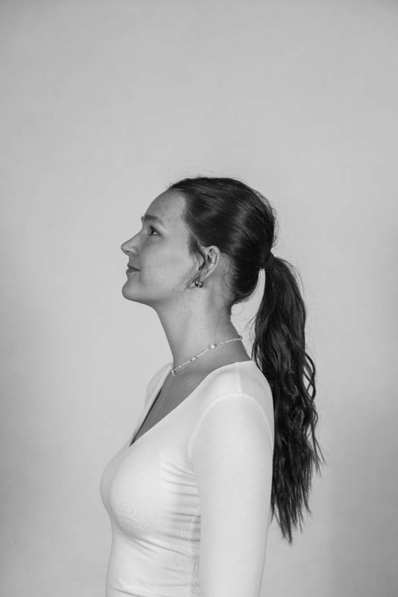

Designer & Explorer
About
About
Me
Theresia Hentschel
Eine Mediendesign-Studentin mit einer Leidenschaft für Technologie und menschzentriertes Design. Mein Ziel ist es, digitale Produkte zu schaffen, die nicht nur schön sind, sondern echte Probleme lösen.
Mein Fokus liegt darauf, die Lücke zwischen Design und Code zu schließen, um nahtlose Interaktionen zu ermöglichen.
Kontaktiere mich